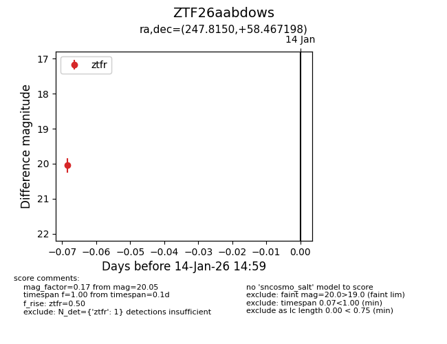
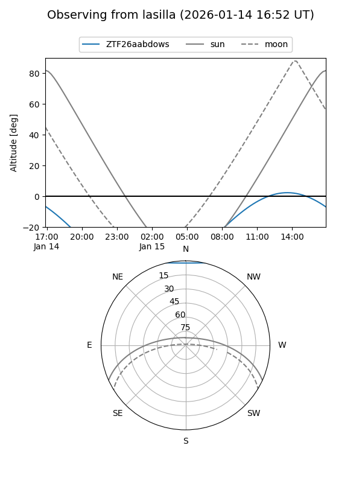
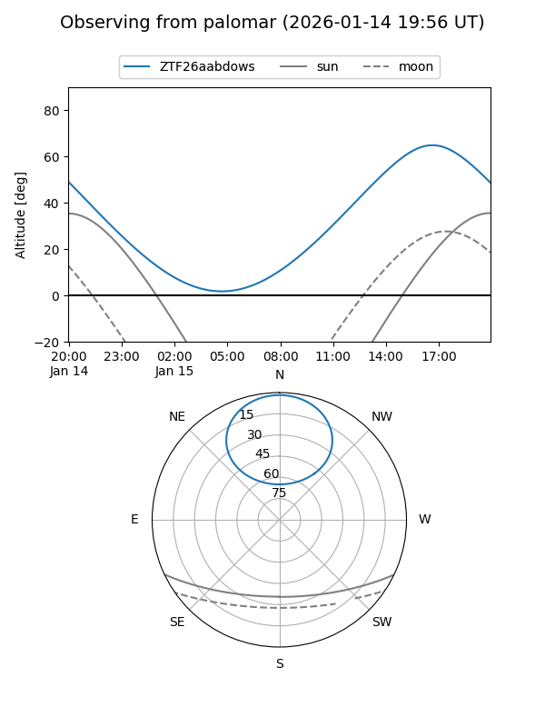

ZTF26aabdows
Target ZTF26aabdows at 2026-01-14 15:00
Aliases and brokers:
FINK: link
Lasair: link
ALeRCE: link
alt names
ZTF26aabdows (ztf,fink_ztf)
Coordinates:
equatorial (ra, dec) = 247.8150,+58.46720
equatorial (HMS+DMS) = 16:31:15.59,+58:28:01.91
galactic (l, b) = (88.3736,+40.98959)
Flags:
Photometry:
last ztfr=20.05
1 ztfr detections
Lightcurve

Visibility


Additional plots